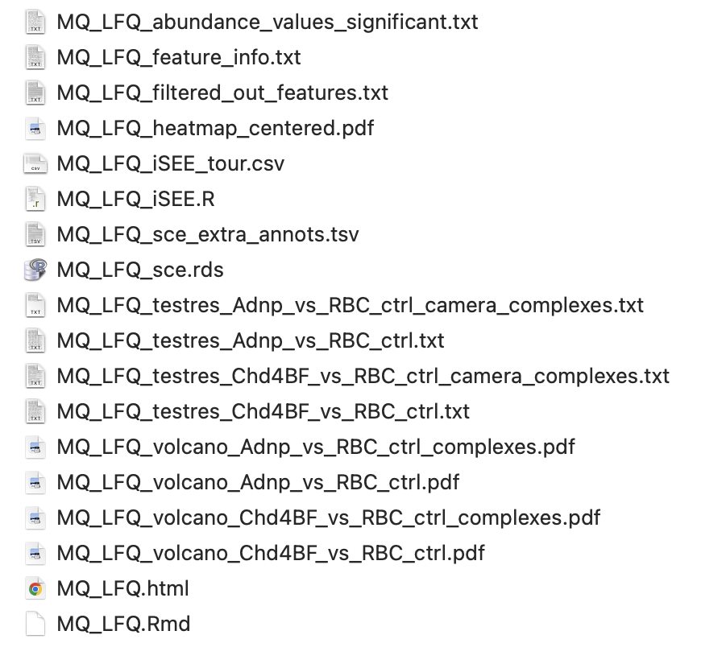

einprot.Rmd
library(S4Vectors)
library(SummarizedExperiment)
library(einprot)
#> Warning: replacing previous import 'utils::findMatches' by
#> 'S4Vectors::findMatches' when loading 'AnnotationDbi'The einprot R package provides easy-to-use end-to-end
proteomics workflows for data quantified with either
MaxQuant (Cox and Mann 2008)
(LFQ) or Proteome Discoverer (Orsburn 2021) (TMT). It was originally
developed to support the proteomics platform at the FMI. The package can
be installed from GitHub as follows:
install.packages("remotes")
remotes::install_github("fmicompbio/einprot")The main functions for running an end-to-end workflow are (depending on the experiment type and quantification engine)
Each of these functions takes a set of arguments defining input files
as well as analysis parameters, injects these into an R markdown
template, and renders the resulting .Rmd file into an html report. In
the process, a collection of output files are generated, including lists
and plots of differentially abundant proteins, and a final
SingleCellExperiment object for further exploration and
analysis.
For example, we will illustrate how to run the MaxQuant
workflow using the example data provided in einprot (from
Ostapcuk et al. (2018)). The workflow
requires a MaxQuant proteinGroups.txt file as
well as (optionally) the XML parameter file. The type of intensities to
use for the analysis is specified via the iColPattern
argument. The following code runs the workflow, using mostly default
parameter values:
(sampleAnnot <- read.delim(system.file("extdata", "mq_example", "1356_sampleAnnot.txt",
package = "einprot")))
out <- runMaxQuantAnalysis(
outputDir = tempdir(),
outputBaseName = "MQ_LFQ",
reportTitle = "MaxQuant LFQ data processing",
reportAuthor = "Charlotte Soneson",
species = "mouse",
mqFile = system.file("extdata", "mq_example", "1356_proteinGroups.txt",
package = "einprot"),
mqParameterFile = system.file("extdata", "mq_example", "1356_mqpar.xml",
package = "einprot"),
iColPattern = "^LFQ\\.intensity\\.",
sampleAnnot = sampleAnnot,
imputeMethod = "MinProb",
ctrlGroup = "RBC_ctrl",
allPairwiseComparisons = FALSE,
normMethod = "none",
stattest = "limma",
includeFeatureCollections = "complexes"
)This will generate a collection of output files in the designated
output directory (here, a temporary directory). All files will be named
with the prefix specified by outputBaseName.
Running the einprot workflows will generate the
following set of output files in the designated output directory:

MQ_LFQ.Rmd) with all
the code run in the workflow. In principle, this can be edited and rerun
manually. Note, however, that if the workflow function is rerun, the
file will be overwritten (if forceOverwrite argument is set
to TRUE).MQ_LFQ.html) obtained by rendering the
.Rmd file.SingleCellExperiment object serialized to an .rds
file (MQ_LFQ_sce.rds). This object reflects all the
analysis steps of the workflow, and is exported at the end of rendering
the .Rmd file. Very long annotation columns are stored in a separate
file (MQ_LFQ_sce_extra_annots.tsv).MQ_LFQ_testres_*.txt), and exported abundance values for
all significant features
(MQ_LFQ_abundance_values_significant.txt).MQ_LFQ_volcano_*.pdf), and a heatmap of the overall
abundance matrix (MQ_LFQ_heatmap_centered.pdf, only for the
MaxQuant workflow).iSEE (Rue-Albrecht et al.
2018) session for interactive exploration of the data
(MQ_LFQ_iSEE.R, which incorporates an interactive guided
tour specified in MQ_LFQ_iSEE_tour.csv).MQ_LFQ_feature_info.txt,
MQ_LFQ_filtered_out_features.txt).All file names start with the outputBaseName specified
in the call to runMaxQuantAnalysis (here,
MQ_LFQ).
The list of species currently supported by einprot can
be obtained using the function getSupportedSpecies(). The
species information is used to retrieve suitable feature identifiers for
complexes and GO terms (if requested), and to provide automatic links to
species-specific databases such as PomBase and WormBase, whenever
applicable.
getSupportedSpecies()
#> taxId species speciesCommon
#> 1 10090 Mus musculus mouse
#> 2 9606 Homo sapiens human
#> 3 6239 Caenorhabditis elegans roundworm
#> 4 7955 Danio rerio zebrafish
#> 5 7227 Drosophila melanogaster fruitfly
#> 6 4932 Saccharomyces cerevisiae baker's yeast
#> 7 284812 Schizosaccharomyces pombe 972h- fission yeastIf specified by the user, einprot will test for
differential abundance not only of individual proteins, but also of
feature sets. Currently, GO terms and protein complexes (plus any
user-specified sets) are supported. The built-in complex database was
created using the makeComplexDB() function, and combines
annotated complexes for multiple different species. Regardless of where
it was originally defined, each complex is also lifted over to the
current species of interest, using the ortholog conversion functionality
of the babelgene package. To list the available complex
databases provided by einprot, we can use the
listComplexDBs() function:
## List available complex databases
(lcdb <- listComplexDBs())
#> complexDbPath
#> 1 /Users/runner/work/_temp/Library/einprot/extdata/complexes/complexdb_einprot0.5.0_20220323_orthologs.rds
#> genDate
#> 1 2022-03-23
## Read the most recent one
cdb <- readRDS(lcdb$complexDbPath[1])
## cdb is a list of databases - each one containing identifiers for a
## specific species
class(cdb)
#> [1] "list"
names(cdb)
#> [1] "mouse" "human"
#> [3] "baker's yeast" "roundworm"
#> [5] "Schizosaccharomyces pombe 972h-"
cdb$mouse
#> CharacterList of length 4308
#> [["mouse: (ER)-localized multiprotein complex, Ig heavy chains associated"]] ...
#> [["mouse: (ER)-localized multiprotein complex, in absence of Ig heavy chains"]]
#> [["mouse: 20S proteasome (+1 alt. ID)"]] Psmb1 Psmb5 Psma3 ... Psma7 Psma5
#> [["mouse: 6S-nuclear aryl hydrocarbon (Ah) receptor ligand-activated complex"]]
#> [["mouse: 9S-cytosolic aryl hydrocarbon (Ah) receptor non-ligand activated complex"]]
#> [["mouse: Abca1-Apoa1-Snta1 complex"]] Abca1 Apoa1 Snta1
#> [["mouse: Abcg5-Abcg1 complex"]] Abcg1 Abcg5
#> [["mouse: Abcg5-Abcg2 complex"]] Abcg2 Abcg5
#> [["mouse: Abcg5-Abcg4 complex"]] Abcg4 Abcg5
#> [["mouse: Abcg5-Abcg8 complex (+1 alt. ID)"]] Abcg5 Abcg8
#> ...
#> <4298 more elements>
## Additional information about the complexes
mcols(cdb$mouse)
#> DataFrame with 4308 rows and 4 columns
#> Species.common
#> <character>
#> mouse: (ER)-localized multiprotein complex, Ig heavy chains associated mouse
#> mouse: (ER)-localized multiprotein complex, in absence of Ig heavy chains mouse
#> mouse: 20S proteasome (+1 alt. ID) mouse
#> mouse: 6S-nuclear aryl hydrocarbon (Ah) receptor ligand-activated complex mouse
#> mouse: 9S-cytosolic aryl hydrocarbon (Ah) receptor non-ligand activated complex mouse
#> ... ...
#> S.pombe: vacuolar proton-transporting V-type ATPase, V1 domain Schizosacc...
#> S.pombe: VCP-NPL4-UFD1 AAA ATPase complex Schizosacc...
#> S.pombe: Vps55/Vps68 complex Schizosacc...
#> S.pombe: Wpl/Pds5 cohesin loading/unloading complex Schizosacc...
#> S.pombe: zeta DNA polymerase complex Schizosacc...
#> Source
#> <character>
#> mouse: (ER)-localized multiprotein complex, Ig heavy chains associated CORUM
#> mouse: (ER)-localized multiprotein complex, in absence of Ig heavy chains CORUM
#> mouse: 20S proteasome (+1 alt. ID) CORUM
#> mouse: 6S-nuclear aryl hydrocarbon (Ah) receptor ligand-activated complex CORUM
#> mouse: 9S-cytosolic aryl hydrocarbon (Ah) receptor non-ligand activated complex CORUM
#> ... ...
#> S.pombe: vacuolar proton-transporting V-type ATPase, V1 domain pombase
#> S.pombe: VCP-NPL4-UFD1 AAA ATPase complex pombase
#> S.pombe: Vps55/Vps68 complex pombase
#> S.pombe: Wpl/Pds5 cohesin loading/unloading complex pombase
#> S.pombe: zeta DNA polymerase complex pombase
#> PMID
#> <character>
#> mouse: (ER)-localized multiprotein complex, Ig heavy chains associated 12475965
#> mouse: (ER)-localized multiprotein complex, in absence of Ig heavy chains 12475965
#> mouse: 20S proteasome (+1 alt. ID) 10436176;7...
#> mouse: 6S-nuclear aryl hydrocarbon (Ah) receptor ligand-activated complex 1317062
#> mouse: 9S-cytosolic aryl hydrocarbon (Ah) receptor non-ligand activated complex 1310021
#> ... ...
#> S.pombe: vacuolar proton-transporting V-type ATPase, V1 domain 14735354;G...
#> S.pombe: VCP-NPL4-UFD1 AAA ATPase complex 21873635;G...
#> S.pombe: Vps55/Vps68 complex 21873635;G...
#> S.pombe: Wpl/Pds5 cohesin loading/unloading complex 26687354
#> S.pombe: zeta DNA polymerase complex GO_REF:000...
#> All.names
#> <character>
#> mouse: (ER)-localized multiprotein complex, Ig heavy chains associated mouse: (ER...
#> mouse: (ER)-localized multiprotein complex, in absence of Ig heavy chains mouse: (ER...
#> mouse: 20S proteasome (+1 alt. ID) mouse: 20S...
#> mouse: 6S-nuclear aryl hydrocarbon (Ah) receptor ligand-activated complex mouse: 6S-...
#> mouse: 9S-cytosolic aryl hydrocarbon (Ah) receptor non-ligand activated complex mouse: 9S-...
#> ... ...
#> S.pombe: vacuolar proton-transporting V-type ATPase, V1 domain S.pombe: v...
#> S.pombe: VCP-NPL4-UFD1 AAA ATPase complex S.pombe: V...
#> S.pombe: Vps55/Vps68 complex S.pombe: V...
#> S.pombe: Wpl/Pds5 cohesin loading/unloading complex S.pombe: W...
#> S.pombe: zeta DNA polymerase complex S.pombe: z...To check which columns will be extracted from the input text file to
generate the main intensity matrix, we can use the
getIntensityColumns() function, provided with the path to
the input text file and the desired iColPattern.
mqFile <- system.file("extdata", "mq_example", "1356_proteinGroups.txt",
package = "einprot")
getIntensityColumns(inFile = mqFile, iColPattern = "^LFQ\\.intensity\\.")
#> $iColsAll
#> [1] "LFQ.intensity.Adnp_IP04" "LFQ.intensity.Adnp_IP05"
#> [3] "LFQ.intensity.Adnp_IP06" "LFQ.intensity.Chd4BF_IP07"
#> [5] "LFQ.intensity.Chd4BF_IP08" "LFQ.intensity.Chd4BF_IP09"
#> [7] "LFQ.intensity.RBC_ctrl_IP01" "LFQ.intensity.RBC_ctrl_IP02"
#> [9] "LFQ.intensity.RBC_ctrl_IP03"
#>
#> $iCols
#> [1] "LFQ.intensity.Adnp_IP04" "LFQ.intensity.Adnp_IP05"
#> [3] "LFQ.intensity.Adnp_IP06" "LFQ.intensity.Chd4BF_IP07"
#> [5] "LFQ.intensity.Chd4BF_IP08" "LFQ.intensity.Chd4BF_IP09"
#> [7] "LFQ.intensity.RBC_ctrl_IP01" "LFQ.intensity.RBC_ctrl_IP02"
#> [9] "LFQ.intensity.RBC_ctrl_IP03"SingleCellExperiment object
einprot has functionality for reading data from
MaxQuant and ProteomeDiscoverer protein
quantification text files and generating a
SingleCellExperiment object. All columns in the text file
that are typically sample-specific will be converted into assays, while
all other columns will be added as row annotations.
imp <- importExperiment(mqFile, iColPattern = "^LFQ\\.intensity\\.")
## The aName output provides the name of the "main" assay
## (corresponding to the specified iColPattern)
imp$aName
#> [1] "LFQ.intensity"
## Imported SingleCellExperiment object
imp$sce
#> class: SingleCellExperiment
#> dim: 463 9
#> metadata(1): colList
#> assays(9): LFQ.intensity MS.MS.Count ... iBAQ Identification.type
#> rownames(463): 1 2 ... 462 463
#> rowData names(35): Protein.IDs Majority.protein.IDs ...
#> Oxidation.M.site.IDs Oxidation.M.site.positions
#> colnames(9): Adnp_IP04 Adnp_IP05 ... RBC_ctrl_IP02 RBC_ctrl_IP03
#> colData names(0):
#> reducedDimNames(0):
#> mainExpName: NULL
#> altExpNames(0):
## All assays
assayNames(imp$sce)
#> [1] "LFQ.intensity" "MS.MS.Count" "Intensity"
#> [4] "Sequence.coverage" "Unique.peptides" "Razor.unique.peptides"
#> [7] "Peptides" "iBAQ" "Identification.type"
## Row annotation
rowData(imp$sce)
#> DataFrame with 463 rows and 35 columns
#> Protein.IDs Majority.protein.IDs Peptide.counts.all
#> <character> <character> <character>
#> 1 A0A023T672... A0A023T672... 1;1;1
#> 2 A0A087WPL5... A0A087WPL5... 13;13;11;1...
#> 3 Q3UH28;Q3U... Q3UH28;Q3U... 3;3;3;3;3;...
#> 4 A2A513;CON... A2A513;CON... 14;14;14;1...
#> 5 A2A791;A2A... A2A791;A2A... 56;55;44
#> ... ... ... ...
#> 459 REV__P2873... REV__P2873... 1
#> 460 REV__P5871... REV__P5871... 1
#> 461 REV__Q8BHW... REV__Q8BHW... 1
#> 462 V9GWW1;Q68... V9GWW1;Q68... 42;40;27;2...
#> 463 V9GXP2 V9GXP2 29
#> Peptide.counts.razor.unique Peptide.counts.unique Protein.names
#> <character> <character> <character>
#> 1 1;1;1 1;1;1 RNA-bindin...
#> 2 13;13;11;1... 13;13;11;1... ATP-depend...
#> 3 3;3;3;3;3;... 3;3;3;3;3;...
#> 4 1;1;1;1;1 1;1;1;1;1 Keratin, t...
#> 5 56;55;44 56;55;44 Zinc finge...
#> ... ... ... ...
#> 459 1 1
#> 460 1 1
#> 461 1 1
#> 462 42;40;27;2... 12;10;0;1;... Zinc finge...
#> 463 2 1
#> Gene.names Fasta.headers Number.of.proteins Peptides
#> <character> <character> <integer> <integer>
#> 1 RBM8;Rbm8a >tr|A0A023... 3 1
#> 2 Dhx9 >tr|A0A087... 6 13
#> 3 Zmynd8 >tr|Q3UH28... 7 3
#> 4 Krt10 >tr|A2A513... 5 14
#> 5 Zmym4 >sp|A2A791... 3 56
#> ... ... ... ... ...
#> 459 >sp|P28738... 1 1
#> 460 >sp|P58710... 1 1
#> 461 >sp|Q8BHW5... 1 1
#> 462 Zfp280d;Zn... >tr|V9GWW1... 10 42
#> 463 Zfp280d >tr|V9GXP2... 1 29
#> Razor.unique.peptides Unique.peptides Sequence.coverage
#> <integer> <integer> <numeric>
#> 1 1 1 10.9
#> 2 13 13 13.1
#> 3 3 3 3.6
#> 4 1 1 18.7
#> 5 56 56 48.7
#> ... ... ... ...
#> 459 1 1 0.0
#> 460 1 1 0.0
#> 461 1 1 0.0
#> 462 42 12 62.3
#> 463 2 1 52.6
#> Unique.razor.sequence.coverage Unique.sequence.coverage Mol.weight.kDa
#> <numeric> <numeric> <numeric>
#> 1 10.9 10.9 19.889
#> 2 13.1 13.1 149.620
#> 3 3.6 3.6 127.290
#> 4 3.4 3.4 57.040
#> 5 48.7 48.7 172.440
#> ... ... ... ...
#> 459 0.0 0.0 109.270
#> 460 0.0 0.0 50.478
#> 461 0.0 0.0 36.570
#> 462 62.3 20.5 104.870
#> 463 3.0 1.5 90.174
#> Sequence.length Sequence.lengths Q.value Score Intensity iBAQ
#> <integer> <character> <numeric> <numeric> <numeric> <numeric>
#> 1 174 174;173;17... 0.0000000 15.2130 34384000 4298000
#> 2 1383 1383;1384;... 0.0000000 35.8400 156100000 2477800
#> 3 1154 1154;1174;... 0.0000000 44.9200 28924000 490240
#> 4 561 561;570;46... 0.0027174 4.5113 29053000 1117400
#> 5 1549 1549;1460;... 0.0000000 323.3100 2787500000 39822000
#> ... ... ... ... ... ... ...
#> 459 956 956 1.0000000 -2.0000 97210000 NaN
#> 460 440 440 0.0100760 3.6649 4734200000 NaN
#> 461 331 331 1.0000000 -2.0000 349630000 NaN
#> 462 949 949;974;78... 0.0000000 323.3100 3057000000 66457000
#> 463 799 799 0.0027322 4.6147 46397000 1104700
#> MS.MS.Count Only.identified.by.site Reverse Potential.contaminant
#> <integer> <character> <character> <character>
#> 1 7
#> 2 25
#> 3 10
#> 4 5 +
#> 5 195
#> ... ... ... ... ...
#> 459 1 + +
#> 460 19 +
#> 461 5 + +
#> 462 148
#> 463 2
#> id Peptide.IDs Peptide.is.razor Mod.peptide.IDs Evidence.IDs
#> <integer> <character> <character> <character> <character>
#> 1 0 2965 True 3291 21752;2175...
#> 2 1 13;191;192... True;True;... 14;213;214... 33;34;35;3...
#> 3 2 1020;4113;... True;True;... 1134;4574;... 6794;6795;...
#> 4 3 242;243;24... False;Fals... 272;273;27... 1567;1568;...
#> 5 4 25;39;117;... True;True;... 27;42;134;... 115;186;18...
#> ... ... ... ... ... ...
#> 459 458 3542 True 3951 26674;2667...
#> 460 459 793 True 883 5390;5391;...
#> 461 460 171 True 191 1160;1161;...
#> 462 461 84;112;113... True;True;... 98;128;129... 474;697;69...
#> 463 462 84;406;484... False;Fals... 98;454;540... 474;2653;3...
#> MS.MS.IDs Best.MS.MS Oxidation.M.site.IDs Oxidation.M.site.positions
#> <character> <character> <character> <character>
#> 1 37130;3713... 37131
#> 2 68;69;70;2... 68;2489;24...
#> 3 11288;1128... 11289;5402...
#> 4 2851;2852;... 2879;2931;... 0 139
#> 5 158;244;24... 158;249;12...
#> ... ... ... ... ...
#> 459 45839 45839 509 509
#> 460 9153;9154;... 9154
#> 461 2371;2372;... 2375 510 4
#> 462 751;752;75... 751;1254;1... 511;512 6;450
#> 463 751;752;75... 751;4530;5... 512 475In many cases it can be helpful to include additional metadata (that
may not be stored in the output files from the quantification tools)
about the experiment in the analysis report. This can be accommodated by
specifying the experimentInfo argument to
runMaxQuantAnalysis() or runPDTMTAnalysis().
This argument should be a named list, and all entries should be scalar
values. In the report, the list will be converted to a table and
displayed.
experimentInfo <- list(
`Experiment ID` = "exp1",
Description = "A description of the experiment"
)einprot supports the definition of customized feature
IDs and labels, to accommodate different run modes of the quantification
tools and user perspectives. The identifiers are defined by the
following five arguments to
runMaxQuantAnalysis()/runPDTMTAnalysis():
idCol - defines the feature identifiers. These must be
unique.labelCol - defines the labels that will be used in most
plots (except where values are grouped by feature identifier, in which
case the idCol will be used instead to guarantee that
different features are not mixed).geneidCol - defines the gene symbol. This identifier
will be used to match features against pre-specified GO terms and
complexes, if requested. If no gene IDs are available, it can be set to
NULL.proteinIdCol - defines the protein identifiers. This
will be used to auto-generate links to UniProt and AlphaFold pages. It
should correspond to one or more UniProt identifiers, separated by
semi-colons.stringIdCol - defines the identifier that will be
matched against STRING. Any identifiers supported by STRING are allowed.
It can also be set to NULL if no STRING matching is
required.Each of these arguments can be either:
make.names). In this case, the values in the
provided columns will be concatenated to create the final values for the
corresponding feature identifiers.data.frame,
corresponding to the annotation columns of the input data file),
returning a character vector of identifiers.We illustrate how this works with a few examples. First, we read the
MaxQuant example data into a SummarizedExperiment object, as this
corresponds to how the data will be represented inside the
einprot workflows:
imp <- importExperiment(mqFile, iColPattern = "^LFQ\\.intensity\\.")
sce <- imp$sceThe available annotation columns are stored in the
rowData of the SummarizedExperiment object:
colnames(rowData(sce))
#> [1] "Protein.IDs" "Majority.protein.IDs"
#> [3] "Peptide.counts.all" "Peptide.counts.razor.unique"
#> [5] "Peptide.counts.unique" "Protein.names"
#> [7] "Gene.names" "Fasta.headers"
#> [9] "Number.of.proteins" "Peptides"
#> [11] "Razor.unique.peptides" "Unique.peptides"
#> [13] "Sequence.coverage" "Unique.razor.sequence.coverage"
#> [15] "Unique.sequence.coverage" "Mol.weight.kDa"
#> [17] "Sequence.length" "Sequence.lengths"
#> [19] "Q.value" "Score"
#> [21] "Intensity" "iBAQ"
#> [23] "MS.MS.Count" "Only.identified.by.site"
#> [25] "Reverse" "Potential.contaminant"
#> [27] "id" "Peptide.IDs"
#> [29] "Peptide.is.razor" "Mod.peptide.IDs"
#> [31] "Evidence.IDs" "MS.MS.IDs"
#> [33] "Best.MS.MS" "Oxidation.M.site.IDs"
#> [35] "Oxidation.M.site.positions"Let’s first define the labelCol (just as an example, the
procedure is identical for the other four arguments) as a vector of
column names:
labelCol <- c("Gene.names", "Majority.protein.IDs")To see the effect this will have inside the einprot
workflows, we call the fixFeatureIds() function and ask it
to generate a new column in rowData(sce), called
einprotLabel and defined by the labelCol
above. We see that the new column contains the values of the
Gene.names and Majority.protein.IDs columns,
concatenated.
sce <- fixFeatureIds(sce, colDefs = list(einprotLabel = labelCol))
head(rowData(sce)$Gene.names)
#> [1] "RBM8;Rbm8a" "Dhx9" "Zmynd8" "Krt10" "Zmym4"
#> [6] "Rlf"
head(rowData(sce)$Majority.protein.IDs)
#> [1] "A0A023T672;Q9CWZ3-2;Q9CWZ3"
#> [2] "A0A087WPL5;E9QNN1;O70133;O70133-2;O70133-3;Q3UR42"
#> [3] "Q3UH28;Q3U1M7;A2A483;E9Q8D1;A2A482;A2A484;A2A485"
#> [4] "A2A513;CON__P02535-1;P02535-3;P02535-2;P02535"
#> [5] "A2A791;A2A791-2;F6VYE2"
#> [6] "A2A7F4;E9Q532"
head(rowData(sce)$einprotLabel)
#> [1] "RBM8;Rbm8a.A0A023T672;Q9CWZ3-2;Q9CWZ3"
#> [2] "Dhx9.A0A087WPL5;E9QNN1;O70133;O70133-2;O70133-3;Q3UR42"
#> [3] "Zmynd8.Q3UH28;Q3U1M7;A2A483;E9Q8D1;A2A482;A2A484;A2A485"
#> [4] "Krt10.A2A513;CON__P02535-1;P02535-3;P02535-2;P02535"
#> [5] "Zmym4.A2A791;A2A791-2;F6VYE2"
#> [6] "Rlf.A2A7F4;E9Q532"Next, let’s instead define the label as the first value in the
Gene.names column (before the first semicolon).
einprot provides a helper function for this:
labelCol <- function(df) getFirstId(df, colName = "Gene.names", separator = ";")
sce <- fixFeatureIds(sce, colDefs = list(einprotLabel = labelCol))
head(rowData(sce)$einprotLabel)
#> [1] "RBM8" "Dhx9" "Zmynd8" "Krt10" "Zmym4" "Rlf"einprot also provides a helper function for combining
multiple columns, possibly after splitting each of them by a given
separator and extracting the first value in each. We illustrate this by
defining the label as a combination of the gene name and the majority
protein ID, but only considering the first ID of each type:
labelCol <- function(df) combineIds(
df, combineCols = c("Gene.names", "Majority.protein.IDs"),
combineWhen = "always", splitSeparator = ";",
joinSeparator = ".", makeUnique = FALSE)
sce <- fixFeatureIds(sce, colDefs = list(einprotLabel = labelCol))
head(rowData(sce)$einprotLabel)
#> [1] "RBM8.A0A023T672" "Dhx9.A0A087WPL5" "Zmynd8.Q3UH28" "Krt10.A2A513"
#> [5] "Zmym4.A2A791" "Rlf.A2A7F4"In the example above, the two columns were always combined. We can
also choose to only concatenate them when the first entry is not unique,
or when the first entry is missing (see the combineWhen
argument). We can also decide to require the returned values to be
unique (by setting makeUnique to TRUE).
labelCol <- function(df) combineIds(
df, combineCols = c("Gene.names", "Majority.protein.IDs"),
combineWhen = "nonunique", splitSeparator = ";",
joinSeparator = ".", makeUnique = FALSE)
sce <- fixFeatureIds(sce, colDefs = list(einprotLabel = labelCol))
## For most features, the gene name is unique
head(rowData(sce)$einprotLabel)
#> [1] "RBM8" "Dhx9" "Zmynd8" "Krt10" "Zmym4" "Rlf"
## For some features, the protein IDs were added to the gene names to create
## unique feature IDs
rowData(sce)$einprotLabel[head(grep("\\.", rowData(sce)$einprotLabel))]
#> [1] "Ehmt1.A2AIS5" "Ehmt2.A2CG76" "Atrx.A6PWK7" "Zfp462.B1AWL2"
#> [5] "Zfp462.B1AWL4" "Zfp462.B1AWL5"Finally, we define a custom function that splits the
Fasta.headers column and extracts the description of the
protein as the part between the first space and the first appearance of
the OS= pattern.
## The column with fasta headers
head(rowData(sce)$Fasta.headers)
#> [1] ">tr|A0A023T672|A0A023T672_MOUSE RNA-binding protein 8A OS=Mus musculus GN=RBM8 PE=1 SV=1;>sp|Q9CWZ3-2|RBM8A_MOUSE Isoform 2 of RNA-binding protein 8A OS=Mus musculus GN=Rbm8a;>sp|Q9CWZ3|RBM8A_MOUSE RNA-binding protein 8A OS=Mus musculus GN=Rbm8a PE=1 SV=3"
#> [2] ">tr|A0A087WPL5|A0A087WPL5_MOUSE ATP-dependent RNA helicase A OS=Mus musculus GN=Dhx9 PE=1 SV=1;>tr|E9QNN1|E9QNN1_MOUSE ATP-dependent RNA helicase A OS=Mus musculus GN=Dhx9 PE=1 SV=1;>sp|O70133|DHX9_MOUSE ATP-dependent RNA helicase A OS=Mus musculus GN=Dhx9"
#> [3] ">tr|Q3UH28|Q3UH28_MOUSE Protein Zmynd8 OS=Mus musculus GN=Zmynd8 PE=1 SV=1;>tr|Q3U1M7|Q3U1M7_MOUSE Protein Zmynd8 OS=Mus musculus GN=Zmynd8 PE=1 SV=1;>tr|A2A483|A2A483_MOUSE Protein Zmynd8 OS=Mus musculus GN=Zmynd8 PE=1 SV=1;>tr|E9Q8D1|E9Q8D1_MOUSE Protein"
#> [4] ">tr|A2A513|A2A513_MOUSE Keratin, type I cytoskeletal 10 OS=Mus musculus GN=Krt10 PE=3 SV=1;>P02535-1 SWISS-PROT:P02535-1 Tax_Id=10090 Gene_Symbol=Krt10 Isoform 1 of Keratin, type I cytoskeletal 10;>sp|P02535-3|K1C10_MOUSE Isoform 3 of Keratin, type I cytos"
#> [5] ">sp|A2A791|ZMYM4_MOUSE Zinc finger MYM-type protein 4 OS=Mus musculus GN=Zmym4 PE=2 SV=1;>sp|A2A791-2|ZMYM4_MOUSE Isoform 2 of Zinc finger MYM-type protein 4 OS=Mus musculus GN=Zmym4;>tr|F6VYE2|F6VYE2_MOUSE Zinc finger MYM-type protein 4 (Fragment) OS=Mus "
#> [6] ">tr|A2A7F4|A2A7F4_MOUSE Insulin-like 3 OS=Mus musculus GN=Rlf PE=4 SV=1;>tr|E9Q532|E9Q532_MOUSE Insulin-like 3 OS=Mus musculus GN=Rlf PE=4 SV=1"
labelCol <- function(df) sub("[^ ]* (.*?) OS=.*", "\\1", df$Fasta.headers)
sce <- fixFeatureIds(sce, colDefs = list(einprotLabel = labelCol))
head(rowData(sce)$einprotLabel)
#> [1] "RNA-binding protein 8A" "ATP-dependent RNA helicase A"
#> [3] "Protein Zmynd8" "Keratin, type I cytoskeletal 10"
#> [5] "Zinc finger MYM-type protein 4" "Insulin-like 3"The column pattern (provided to the einprot workflows
via the iColPattern argument) defines which columns of the
quantification file that will be used to generate the main assay in the
returned SingleCellExperiment object. Typically, for
MaxQuant output this would be either "^Intensity\\.",
"^LFQ\\.intensity\\." or "^iBAQ\\.". It is
also accepted to not escape the periods at all. For ProteomeDiscoverer,
the iColPattern is typically either
"^Abundance\\.F.+\\.Sample\\.",
"^Abundances\\.Grouped\\." or
"^Abundance\\.F[0-9]+\\.". As mentioned above, it is often
helpful to first read the raw file into a
SingleCellExperiment object before launching the entire
workflow, to make sure that the column pattern is correctly
interpreted.
imp <- importExperiment(mqFile, iColPattern = "^LFQ.intensity.")
imp <- importExperiment(mqFile, iColPattern = "unknown_pattern")
#> Error in importExperiment(mqFile, iColPattern = "unknown_pattern"): Invalid iColPattern. Valid values: ^MS\.MS\.Count\., ^LFQ\.intensity\., ^Intensity\., ^Sequence\.coverage\., ^Unique\.peptides\., ^Razor\.+unique\.peptides\., ^Peptides\., ^iBAQ\., ^Top3\., ^Identification\.type\., ^Abundance\., ^Abundance\.F[0-9]+\., ^Abundance\.F.+\.Sample\., ^Abundances\.Count\., ^Abundances\.Count\.F[0-9]+\., ^Abundances\.Count\.F.+\.Sample\., ^Abundances\.Normalized\., ^Abundances\.Normalized\.F[0-9]+\., ^Abundances\.Normalized\.F.+\.Sample\., ^Abundances\.Grouped\.Count\., ^Abundances\.Grouped\.CV\.in\.Percent\., ^Abundances\.Grouped\., \.Unique\.Spectral\.Count$, \.Total\.Spectral\.Count$, \.Spectral\.Count$, \.Unique\.Intensity$, \.Total\.Intensity$, \.MaxLFQ\.Unique\.Intensity$, \.MaxLFQ\.Total\.Intensity$, \.MaxLFQ\.Intensity$, \.Intensity$, ^MS.MS.Count., ^LFQ.intensity., ^Intensity., ^Sequence.coverage., ^Unique.peptides., ^Razor.+unique.peptides., ^Peptides., ^iBAQ., ^Top3., ^Identification.type., ^Abundance., ^Abundance.F[0-9]+., ^Abundance.F.+.Sample., ^Abundances.Count., ^Abundances.Count.F[0-9]+., ^Abundances.Count.F.+.Sample., ^Abundances.Normalized., ^Abundances.Normalized.F[0-9]+., ^Abundances.Normalized.F.+.Sample., ^Abundances.Grouped.Count., ^Abundances.Grouped.CV.in.Percent., ^Abundances.Grouped., .Unique.Spectral.Count$, .Total.Spectral.Count$, .Spectral.Count$, .Unique.Intensity$, .Total.Intensity$, .MaxLFQ.Unique.Intensity$, .MaxLFQ.Total.Intensity$, .MaxLFQ.Intensity$, .Intensity$A sample annotation table must be provided when running each of the
einprot workflows. This data.frame must have
at least two columns, named sample and group,
but any additional columns are also supported and will be included in
the final SingleCellExperiment object. The values in the
sample column must correspond to the column names of the
imported SingleCellExperiment object, which are generated
by removing the specified column pattern from the raw file column names.
For example, in the data we imported in the previous section, we have
the following sample names:
colnames(imp$sce)
#> [1] "Adnp_IP04" "Adnp_IP05" "Adnp_IP06" "Chd4BF_IP07"
#> [5] "Chd4BF_IP08" "Chd4BF_IP09" "RBC_ctrl_IP01" "RBC_ctrl_IP02"
#> [9] "RBC_ctrl_IP03"By default, einprot will perform all pairwise
comparisons between the groups in the group column in the
sample annotation table (at least one of the groups in each comparison
must have at least two samples). In some cases, it is useful to specify
the comparisons explicitly. For example:
allPairwiseComparisons to TRUE, and
ctrlGroup to the desired control group.comparisons to be a list of character vector of length 2,
each defining a desired comparison (with the control level as the first
element). In the example data set above, we can define e.g. mergeGroup
argument. The new group can then be used in the defined
comparisons:This will compare the Adnp group to all samples not in
the group.
It is also worth noting that if the singleFit argument
is set to TRUE, the interpretation of the comparisons
involving merged groups (and complements) changes somewhat. In this
case, instead of considering all samples in the merged group as
replicates, a model is first fit with all the original groups, and a
contrast is designed to compare the averages of the fitted values across
the merged groups in the comparison.
einprot will adjust for batch effects by including an
extra term in the linear model (if the chosen statistical test is either
limma or proDA), if the sample annotation
table contains a column named batch. In this case, it will
also calculate a matrix of batch corrected abundance values, and use
this for visualization.
linkTableColumns and
interactiveDisplayColumns
The report generated by einprot contains several
interactive elements. If addInteractiveVolcanos is set to
TRUE, interactive volcano plots will be generated for each
comparison. In addition, a link table provides an overview of all the
features in the data set. The user can define additional columns to
include in this table, as well as columns to be displayed when hovering
over the points in the interactive volcano plots. Any column name (or
regular expression matching multiple column names) in the
rowData of the exported SingleCellExperiment
object can be displayed in the link table - to see what this entails for
a specific data set/quantification setup the easiest may be to run
through the workflow once, read the resulting
SingleCellExperiment and extract the column names of the
row data. For the interactive volcano plots, any column in the
statistical test result can be included, as well as any ‘annotation’
column in the row data of the SingleCellExperiment object
(i.e., not the columns corresponding to the test results that are copied
into the row data of the returned object). The separate test results are
included in the final SingleCellExperiment object and can
be accessed via
testres <- metadata(sce)$testres$tests(assuming that sce corresponds to the
SingleCellExperiment object returned by the
einprot workflows).
MaxQuant/Proteome Discoverer
metadata
In addition to reading the protein quantifications,
einprot also reads the metadata XML files generated by
MaxQuant and Proteome Discoverer and extracts
information to display in the final report. We can also convert it to a
nice-looking table. The Proteome Discoverer summary
function requires the path to a folder that contains at least the
_InputFiles.txt and _StudyInformation.txt
output files from the Proteome Discoverer run, in addition
to the .pdAnalysis file with the run metadata (if one or
more of the files are missing, only the information from the available
file(s) is returned).
## MaxQuant
mqinfo <- readMaxQuantXML(
system.file("extdata", "mq_example", "1356_mqpar.xml", package = "einprot"))
makeTableFromList(mqinfo)| MaxQuant version | 1.5.3.8 |
| Parameter file | /Users/runner/work/_temp/Library/einprot/extdata/mq_example/1356_mqpar.xml |
| Search engine | Andromeda |
| Raw file location | D:/Data/MaxQuant/ |
| Raw files | F_160817_AdnpFB_IP04.raw, F_160817_AdnpFB_IP05.raw, F_160817_AdnpFB_IP06.raw, F_160817_Chd4BF_IP07.raw, F_160817_Chd4BF_IP08.raw, F_160817_Chd4BF_IP09.raw, F_160817_RBC_ctrl_IP01.raw, F_160817_RBC_ctrl_IP02.raw, F_160817_RBC_ctrl_IP03.raw |
| Sample names | Adnp_IP04, Adnp_IP05, Adnp_IP06, Chd4BF_IP07, Chd4BF_IP08, Chd4BF_IP09, RBC_ctrl_IP01, RBC_ctrl_IP02, RBC_ctrl_IP03 |
| Databases | D:/Databases/MOUSE__150129.fasta |
| Contaminants | */MaxQuant_1.5.3.8/MaxQuant/bin/conf/contaminants.fasta |
| Quantification mode | 1 |
| Quantification settings (LFQ) | LFQ min. ratio count: 1, fastLFQ: false, match-between runs (MBR): true, Intensity based absolute quantification (iBAQ): true |
| Min. razor peptides | 1 |
| Requantify | false |
| Enzymes | Trypsin/P |
| Variable modifications | Oxidation (M), Acetyl (Protein N-term) |
| Fixed modifications | |
| Max peptide mass | 8000 |
| Min peptide length | 7 |
## Proteome Discoverer
pdinfo <- readProteomeDiscovererInfo(
pdOutputFolder = system.file("extdata", "pdtmt_example",
package = "einprot"),
pdResultName = "Fig2_m23139_RTS_QC_varMods",
pdAnalysisFile = system.file("extdata", "pdtmt_example",
"Fig2_m23139_RTS_QC_varMods.pdAnalysis",
package = "einprot"))
makeTableFromList(pdinfo)| PD version | 2.5.0.400 |
| PD output folder | /Users/runner/work/_temp/Library/einprot/extdata/pdtmt_example |
| PD result name | Fig2_m23139_RTS_QC_varMods |
| PD analysis file | /Users/runner/work/_temp/Library/einprot/extdata/pdtmt_example/Fig2_m23139_RTS_QC_varMods.pdAnalysis |
| PD Processing WF | PWF_Tribrid_TMTpro_Quan_SPS_MS3_SequestHT_Percolator |
| PD Consensus WF | CWF_Comprehensive_Enhanced Annotation_Reporter_Quan |
| Search engine | Sequest HT |
| Instruments | Orbitrap Fusion |
| Raw file location | D:/Data/PXD017803/ |
| Raw files | Fig2_m23139_RTS.raw |
| Sample names | HIS4KO_S05, HIS4KO_S06, HIS4KO_S07, HIS4KO_S08, MET6KO_S01, MET6KO_S02, MET6KO_S03, MET6KO_S04, URA2KO_S09, URA2KO_S10, URA2KO_S11, URA2KO_S12, WT_S13, WT_S14, WT_S15, WT_S16 |
| Databases | CON_iRT_contaminants_cRAPMaxQFMI_150507.fasta; YEAST__210503.fasta |
| Contaminants | CON_iRT_contaminants_cRAPMaxQFMI_150507.fasta |
| Quantification settings (LFQ) | Peptides used:Unique + Razor, quan. method: Reporter Ions Quantifier, quan. MS order: MS3, abundance type: S/N, quan. correction: False, MS1 co-isolation threshold: 50, av. reporter SN threshold: 10, PSP mass matches [%]: 65, norm. method: Total Peptide Amount, PD imputation: None |
| Enzymes | Trypsin (Full) |
| Variable modifications | Oxidation / +15.995 Da (M), Carbamidomethyl / +57.021 Da (C), TMTpro / +304.207 Da (K, S, T), TMTpro / +304.207 Da (N-Terminus) |
| Fixed modifications | |
| Validation method | PercolatorConfidenceAssignment |
| Validation based on | Target/Decoy, q-Value |
| Confidence thresholds | strict: 0.01, relaxed: 0.05 |
| Max missed cleavages | 2 |
#> R version 4.3.0 (2023-04-21)
#> Platform: x86_64-apple-darwin20 (64-bit)
#> Running under: macOS Monterey 12.6.5
#>
#> Matrix products: default
#> BLAS: /Library/Frameworks/R.framework/Versions/4.3-x86_64/Resources/lib/libRblas.0.dylib
#> LAPACK: /Library/Frameworks/R.framework/Versions/4.3-x86_64/Resources/lib/libRlapack.dylib; LAPACK version 3.11.0
#>
#> locale:
#> [1] en_US.UTF-8/en_US.UTF-8/en_US.UTF-8/C/en_US.UTF-8/en_US.UTF-8
#>
#> time zone: UTC
#> tzcode source: internal
#>
#> attached base packages:
#> [1] stats4 stats graphics grDevices utils datasets methods
#> [8] base
#>
#> other attached packages:
#> [1] einprot_0.7.1 SummarizedExperiment_1.30.0
#> [3] Biobase_2.60.0 GenomicRanges_1.52.0
#> [5] GenomeInfoDb_1.36.0 IRanges_2.34.0
#> [7] MatrixGenerics_1.12.0 matrixStats_0.63.0
#> [9] S4Vectors_0.38.0 BiocGenerics_0.46.0
#>
#> loaded via a namespace (and not attached):
#> [1] STRINGdb_2.12.0 fs_1.6.2
#> [3] ProtGenerics_1.32.0 bitops_1.0-7
#> [5] httr_1.4.5 webshot_0.5.4
#> [7] ash_1.0-15 RColorBrewer_1.1-3
#> [9] doParallel_1.0.17 tools_4.3.0
#> [11] utf8_1.2.3 R6_2.5.1
#> [13] DT_0.27 lazyeval_0.2.2
#> [15] mgcv_1.8-42 GetoptLong_1.0.5
#> [17] withr_2.5.0 iSEEhex_1.2.0
#> [19] gridExtra_2.3 GGally_2.1.2
#> [21] ggalt_0.4.0 cli_3.6.1
#> [23] textshaping_0.3.6 shinyjs_2.1.0
#> [25] sandwich_3.0-2 sass_0.4.5
#> [27] robustbase_0.95-1 mvtnorm_1.1-3
#> [29] readr_2.1.4 genefilter_1.82.0
#> [31] pkgdown_2.0.7.9000 systemfonts_1.0.4
#> [33] svglite_2.1.1 stringdist_0.9.10
#> [35] scater_1.28.0 rrcov_1.7-2
#> [37] plotrix_3.8-2 maps_3.4.1
#> [39] limma_3.56.0 rstudioapi_0.14
#> [41] impute_1.74.0 RSQLite_2.3.1
#> [43] generics_0.1.3 shape_1.4.6
#> [45] gtools_3.9.4 dplyr_1.1.2
#> [47] Matrix_1.5-4 ggbeeswarm_0.7.2
#> [49] fansi_1.0.4 imputeLCMD_2.1
#> [51] lifecycle_1.0.3 yaml_2.3.7
#> [53] iSEEu_1.12.0 gplots_3.1.3
#> [55] grid_4.3.0 blob_1.2.4
#> [57] promises_1.2.0.1 crayon_1.5.2
#> [59] shinydashboard_0.7.2 miniUI_0.1.1.1
#> [61] lattice_0.21-8 beachmat_2.16.0
#> [63] ComplexUpset_1.3.3 msigdbr_7.5.1
#> [65] cowplot_1.1.1 annotate_1.78.0
#> [67] KEGGREST_1.40.0 pillar_1.9.0
#> [69] knitr_1.42 ComplexHeatmap_2.16.0
#> [71] rjson_0.2.21 codetools_0.2-19
#> [73] glue_1.6.2 ggiraph_0.8.7
#> [75] pcaMethods_1.92.0 data.table_1.14.8
#> [77] MultiAssayExperiment_1.26.0 vctrs_0.6.2
#> [79] png_0.1-8 gtable_0.3.3
#> [81] gsubfn_0.7 cachem_1.0.7
#> [83] xfun_0.39 mime_0.12
#> [85] pcaPP_2.0-3 survival_3.5-5
#> [87] rrcovNA_0.4-15 SingleCellExperiment_1.22.0
#> [89] iterators_1.0.14 gmm_1.7
#> [91] iSEE_2.12.0 ellipsis_0.3.2
#> [93] nlme_3.1-162 bit64_4.0.5
#> [95] ExploreModelMatrix_1.12.0 rprojroot_2.0.3
#> [97] bslib_0.4.2 tmvtnorm_1.5
#> [99] irlba_2.3.5.1 vipor_0.4.5
#> [101] KernSmooth_2.23-20 colorspace_2.1-0
#> [103] DBI_1.1.3 proDA_1.14.0
#> [105] tidyselect_1.2.0 bit_4.0.5
#> [107] compiler_4.3.0 extrafontdb_1.0
#> [109] chron_2.3-60 rvest_1.0.3
#> [111] BiocNeighbors_1.18.0 xml2_1.3.4
#> [113] desc_1.4.2 DelayedArray_0.25.0
#> [115] plotly_4.10.1 colourpicker_1.2.0
#> [117] scales_1.2.1 caTools_1.18.2
#> [119] DEoptimR_1.0-12 proj4_1.0-12
#> [121] hexbin_1.28.3 stringr_1.5.0
#> [123] digest_0.6.31 rmarkdown_2.21
#> [125] XVector_0.40.0 htmltools_0.5.5
#> [127] pkgconfig_2.0.3 extrafont_0.19
#> [129] sparseMatrixStats_1.12.0 highr_0.10
#> [131] fastmap_1.1.1 rlang_1.1.1
#> [133] GlobalOptions_0.1.2 htmlwidgets_1.6.2
#> [135] DelayedMatrixStats_1.22.0 shiny_1.7.4
#> [137] jquerylib_0.1.4 zoo_1.8-12
#> [139] jsonlite_1.8.4 BiocParallel_1.34.0
#> [141] mclust_6.0.0 BiocSingular_1.16.0
#> [143] RCurl_1.98-1.12 magrittr_2.0.3
#> [145] scuttle_1.10.0 kableExtra_1.3.4
#> [147] GenomeInfoDbData_1.2.10 patchwork_1.1.2
#> [149] munsell_0.5.0 Rcpp_1.0.10
#> [151] viridis_0.6.2 babelgene_22.9
#> [153] proto_1.0.0 MsCoreUtils_1.12.0
#> [155] sqldf_0.4-11 stringi_1.7.12
#> [157] rintrojs_0.3.2 zlibbioc_1.46.0
#> [159] MASS_7.3-59 plyr_1.8.8
#> [161] parallel_4.3.0 ggrepel_0.9.3
#> [163] forcats_1.0.0 Biostrings_2.68.0
#> [165] splines_4.3.0 hash_2.2.6.2
#> [167] hms_1.1.3 circlize_0.4.15
#> [169] igraph_1.4.2 uuid_1.1-0
#> [171] QFeatures_1.10.0 ScaledMatrix_1.7.1
#> [173] XML_3.99-0.14 evaluate_0.20
#> [175] tzdb_0.3.0 foreach_1.5.2
#> [177] httpuv_1.6.9 Rttf2pt1_1.3.12
#> [179] tidyr_1.3.0 purrr_1.0.1
#> [181] reshape_0.8.9 clue_0.3-64
#> [183] norm_1.0-11.0 ggplot2_3.4.2
#> [185] rsvd_1.0.5 xtable_1.8-4
#> [187] AnnotationFilter_1.24.0 later_1.3.0
#> [189] viridisLite_0.4.1 ragg_1.2.5
#> [191] tibble_3.2.1 beeswarm_0.4.0
#> [193] memoise_2.0.1 AnnotationDbi_1.62.0
#> [195] cluster_2.1.4 shinyWidgets_0.7.6
#> [197] shinyAce_0.4.2